Точковими оцінками називають статистики, які оцінюють параметри генеральної сукупності одним числом або точкою.
Наприклад, менеджер універсального магазину може зробити вибірку 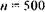 покупців і знайти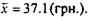
Це значення і буде точковою оцінкою середньої купівельної спроможності покупців універсального магазину (генеральної сукупності).
Інтервальною оцінкою називають оцінку, що визначається двома числами - кінцями інтервалу, який покриває невідомий параметр.
Менеджер може вважати, що середня купівельна спроможність покупців універсаму знаходиться між 35(грн.) та 38(грн.). Для будь-якої інтервальної оцінки необхідно встановити рівень довіри, який характеризує її точність.
Отже, мова йде про довірчий інтервал.
Таким чином, невідомий параметр генеральної сукупності може бути оцінений точковою оцінкою або у вигляді довірчого інтервалу.
Точкова оцінка використовує число або величину для точно визначеної оцінки параметру генеральної сукупності.
Довірчий інтервал окреслює проміжок, в якому невідомий параметр може знаходитись і визначає рівень довіри щодо того, чи одержаний інтервал містить цей параметр.
Найбільш поширеними є три рівні довіри, що асоціюються з довірчими інтервалами, а саме: 99, 95 та 99 відсотків. Це зовсім не означає, що не можна використовувати інший рівень довіри, наприклад 82%, якщо виникає така необхідність.
Нехай знайдена за даними вибірки статистична оцінка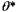 буде точковою оцінкою невідомого параметру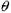генеральної сукупності.
Якщо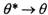, тоді 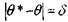, тобто 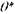 тим точніше значення 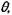 чим менша абсолютна величина різниці
Але статистичні методи дозволяють стверджувати, що оцінка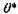 задовольняє нерівність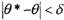 тільки з певною ймовірністю 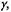яку і називають рівнем довіри або надійністю.
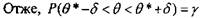 (18)
Тобто довірчий інтервал для невідомого параметру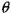генеральної сукупності із заданою надійністю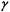 та точністю оцінки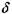 може бути визначений як
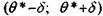 (19)
Нехай кількісна ознака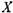генеральної сукупності розподілена за нормальним законом і середньоквадратичне відхиленнявідоме.
Виникає питання: "Якпобудувати довірчий інтервал, що покриває математичне сподівання а генеральної сукупності із заданою надійністю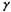?".
Це можна зробити наступним чином.
Виконаємо побудову довірчого інтервалу виходячи із припущення нормального розподілу випадкової величини х. Маємо
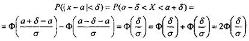
Але 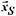- випадкова величина і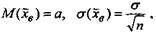 Отже,
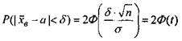 (20),
Де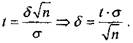
Використовуючи формули (18) та (20), одержимо
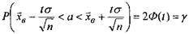 (21)
Таким чином, довірчий інтервал для математичного сподівання а генеральної сукупності при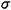відомому має вигляд:
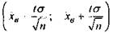 (22)
Точність оцінки визначається як
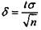 (23)
Значення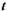або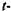статистика може бути визначена із рівності
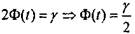 (24)
з використанням статистичної таблиці значень інтеграла функції Лапласа 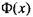.
Приклад 5. Випадкова величина розподілена за нормальним законом з параметром 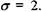 Зроблена вибірка об'єму 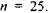 З надійністю
Розв'язання. Маємо
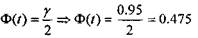
З таблиці інтегральної функції Лапласа значенню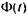 0/175
відповідає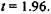Отже, згідно формули (23) точність оцінки буде
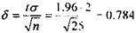
Таким чином, довірчий інтервал мас вигляд
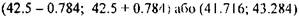
Нехай ознака 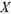 генеральної сукупності розподілена за нормальним законом з параметром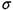 і потрібно знайти об'єм вибірки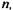 який із заданою точністю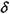 та надійністю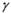допоможе знайти оцінку параметру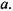Із формули (23) маємо
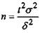 (25)
Приклад 6. При виготовленні компакт-дисків для плеєрів відхилення у 2см в діаметрі диску не є проблемою при їх використанні. Контрольна перевірка виявила, що середньоквадратичне відхилення в діаметрі певної партії дисків, дорівнює 6см. Виробник компакт-дисків для плеєрів бажає визначити середнє відхилення у діаметрі диску з надійністю у 95%. Якого об'єму має бути вибірка?
Розв'язання. З попереднього прикладу відомо, що 95% рівню надійності відповідає число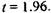 Маємо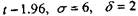
Тоді,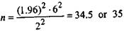
Виробник має зробити вибірку із 35 елементів, щоб з надійністю 95% бути впевненим, що середнє відхилення у діаметрі диску не перевищує 2см.